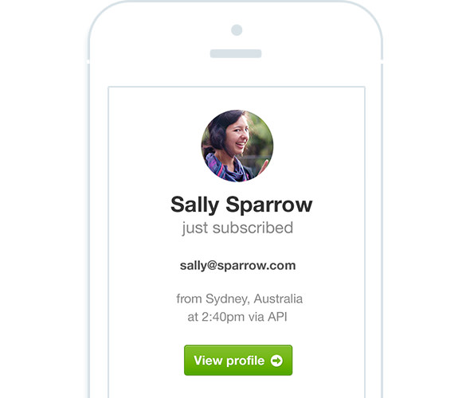

Subscriber notification emails
I designed subscriber notification emails from the ground up, to help email marketers keep up to date with their new subscriber activity.

I designed subscriber notification emails from the ground up, to help email marketers keep up to date with their new subscriber activity.
Email marketers were having trouble keeping up to date with their new email subscriber activity and needed help measuring the growth of their lists. Marketers didn’t just want to know the numbers, they also needed a way to get to know the people subscribing to their lists. Who were they? Where were they from? This was much more useful to them than a list of faceless email addresses.
As subscriber activity can vary greatly amongst marketers, we needed to ensure that our solution catered to both high and low amounts of activity. Also, some people would be very interested in keeping up to date with their subscribers, while others might want to be updated less frequently or not at all. As a result, we decided to provide two emails that people could opt in to receive, as seen in the simple user journey diagram above.
When a person subscribes to an email subscriber list, it’s possible to pull additional public data, including things like their location and sometimes even a Gravatar image. The challenge is to present this data in a way that’s both useful and interesting. As this data isn’t always available for every person who signs up to a list, we took a modular approach. Our email design would basically need to dynamically transform according to the data available, while looking great and making sense in all cases.
After countless hours of research and sketching (above), we designed an email layout that featured blocks that basically stacked on top of one another. Each block was designed so that it could be slotted into place if there was data for it. If a particular block didn’t have data, it was simply left out. We also developed a content hierarchy, with the most important content sections being at the top of the email. Now it was simply a case of designing the visuals for each section so that they displayed the right information and slotted seamlessly into the email at any spot.
Statistics were an important way for customers to measure the growth of their email subscribers, so we decided to prioritise them at the top (as seen above). Pictures speak a thousand words, so we tried to incorporate visuals instead of numbers and tables where appropriate. The map section above plots the people that subscribed during the given time period on a Google map. It gives customers a quick visual of where their subscribers are from. There’s also a table showing the number of subscribers per country for the more statistically inclined.
How do you turn an email address into a person? Give it a name and a face, and that’s exactly what we did in the ‘Meet your subscribers’ section above. We displayed a list of Gravatars in this section to personalize things a bit and help customers get to know their subscribers better. Circular avatars might not be the most practical design elements, but they look great and match the aesthetic we were after. We also limited the size of this list to ensure that it wouldn’t be overwhelming, and incorporated a link to view additional subscribers at the end. We tested initial concepts with customers to ensure that we were on the right track, before delving into the finer details.
We can see the modularised summary email in action above. The ‘Meet some of your new subscribers’ block only displays if we have avatar image data available for any of the previous week’s subscribers. Similarly, if there’s no location data for that week, the location block will be left out of the email.
The visual design was kept clean and simple to keep the focus on the content. The map acts as a feature image for the email, giving it the visual weight it needs at the top. Simple horizontal lines are used to separate the email into sections and each section seamlessly connects to the next. Bright green is used to draw attention to the call to action button at the bottom of the email to drive users back into the app.
The instant email above also has a dynamically changing design, depending on the data collected for a subscriber. We wanted this email to give marketers a snapshot of who the subscriber is and where they’re from. The subscriber’s name acts as a header next to a large avatar image to personalise the email, while the location map is split into two to show the location from different zoom levels and add visual interest.
I designed and coded the email to be responsive and found myself knee-deep in nested tables and inline CSS (which was lots of fun as you can imagine). Typography becomes increasingly important for readability on smaller screens, so great care was taken in setting font sizes, weights and padding. I like to be generous with font sizes on mobiles, not going any smaller than 14px in size. I also centre-aligned the text to balance out the design.
For this email I decided to set a breakpoint at 600px width, as this is the point at which the desktop email gets squashed. The email width becomes flexible below this point rather than simply jumping to a fixed 320px width. A flexible or fluid email design is a great way of ensuring that your email will fill the screen nicely on any sized mobile device, which is becoming increasingly important with the ever-growing array of new mobile devices.
Since this feature was launched, we’ve received lots of great feedback from some very happy customers. With over 1.3 million notification emails sent for around 84 million new subscribers, I’m glad we took the time to sweat the details of the design. As we all know, no feature is ever complete. There’s always room to tweak, hone and optimise, and we’ll continue to do so for this feature and others in the future.